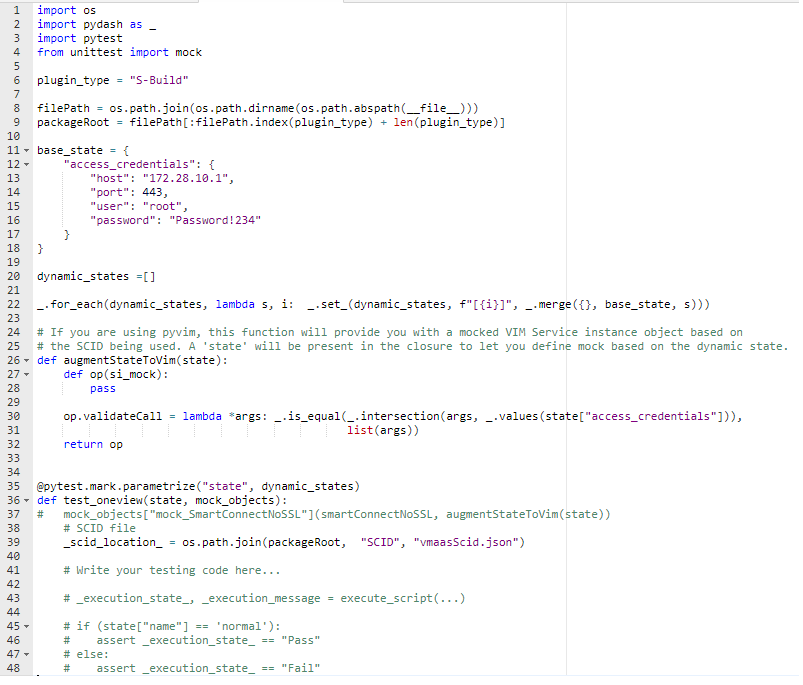
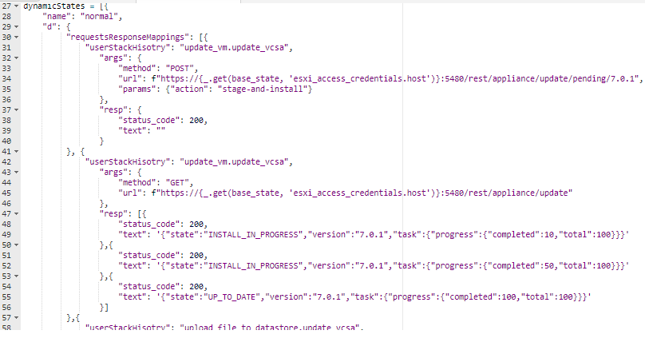

Doc Ver: 1.0
| Abbreviation | Meaning |
|---|---|
codebase |
The solution/EP-VMElement project |
application |
The PR checks application project |
The checks are run only when a pull request is created or a commit is pushed to a branch for which a pull request is already present.
The application executes the checks for test/code-coverage and lint issues the same way a developers would run on their local workstation. Read section on Lint Check and Test Suite for details.
The application runs only those test_names that are mentioned in the PR description and no other tests that may be present in the codebase's test folder, and lint check are runs for only the files that are modified in the PR. The SCID JSON for running the test will be picked from SCID folder at the root of the codebase. Reviewer discretion is required to verify that the code submitted is backed by appropriate testing.
tester.py script provides the single interface for creating test, running test and generating the coverage report for both python and powershell test code. Read more about it on test-suite section below.
Python linter used is flake8 and lint rules are provided by wemake python style guide). The rules set is thus a union of flake8 default rules and those added by wemake style guide. Custom rules are specified through .flake8 file located at the root of the codebase. PowerShell linter used in PSScriptAnalyzer and custom rules are specified through .psLintRule.psm1 file located at the root of the codebase currently.*
Test-suite related files and the Linter custom rules are considered to be locked files and only PR designated for such file modification should modify those files. Reviewer can ignore Locked files modification check fail for such PR which are exclusively for modification of locked files.
These dependencies are not required by the actual automation code. They are required by test runners and linters and needs to be installed in the coding/hosting environment.
| Library | Version (Major/Minor version) | Used for | Installation Command |
|---|---|---|---|
| flake8 | 3 | Python linter (also implement a default python styleguide) | pip install flake8==3.* |
| wemake-python-styleguide | 0.15 | Python code styleguide | pip install wemake-python-styleguide==0.15.* |
| tox | 3 | Python code test runner | pip install tox==3.* |
| PSScriptAnalyzer | 1.19 | PowerShell linter | PS > Install-Module -Name PSScriptAnalyzer -RequiredVersion 1.19.1 |
| Pester | 5 | PowerShell test runner | PS > Install-Module -Name Pester -RequiredVersion 5.1.1 |
| ReportGenerator |
In addition, the python script 'tester.py' uses the general utility library 'pydash', so make sure this is also available in your environment (pip install pydash).
The Lint Check makes sure that the conventions as mentioned in the coding guideline are followed as well as complexity and general good coding standard were followed in the code being submitted for review.
A git diff between current branch head commit and the base branch is made to get the list of modified/added files. Of these files, only those ending with .py and (.psm1, .ps1) are considered as Python and PowerShell files respectively. These files' path are checked against "LINTTER_CHECK_OMITTED_PATHS" environment variable and are filtered out if their path is listed as omitted path. The remaining files are checked for linting issues with the respective linters, using custom rule as defined in .flake8 and .psLintRule.psm1 located at the root of the codebase. The check will fail unless all reported lint issues are fixed.
Running lint check locally is no different than how a developer would run the lint check on local workstation in absence of the application.
Install the linter's dependencies as mentioned above and run linter as usual; the application does the same thing! The custom linter rules for Python and PowerShell linter are defined through files named - .flake8 and .psLintRule.psm1 respectively, both of which are present at the root of the codebase, They specify custom rules that override default rules.
Note, both these files are among
locked files, and no PR [except > a PR dedicated to modify these files] should do any modification to
these files. [IMPORTANT] Reviewer should not approve such a PR
having modification to locked files. TheLOCKED FILE MODIFICATION CHECKwill fail if such file/s modified.
Most IDEs support on the fly lint check. See docs for your favourite IDE on how to configure on fly lint check while using the custom rules. Below is how VSCode IDE can be configured:-
flake8 accepts customization defined in file named .flake8 which is already defined and present at root of codebase.
Run
flake8 <filePath/folderPath>
when running the command from root of thecodebase. Else, specify the custom rule path with --config parameter: `
flake8 --config <codebase/.flake8> <filePath/folderPath>`
The application runs all checks at the state of code at the commit HEAD. This means, before pushing code and generating PR, make sure to pull from the base branch
(which is also a standard practice) as the locked files may be modified at the base branch. In such a case, the locked file modification check will fail even though
no locked files were modified locally- (pull from base branch in such a case and the check should pass).
On Pull Request related events [creation/modifications], the application will checkout the HEAD commit, and then execute the command flake8 --config <codebase/.flake8> <file_path> and Invoke-ScriptAnalyzer -Path <codebase/.psLintRule.psm1> <file_path> for Python and PowerShell files respectively on the checked-out code.
To understand this check better, it is advisable to have some familiarity with the Test Suite documented below.
This check is intended to make sure that the code submitted for review has backing of proper testing.
The automation code is related to some or other SAT task, where the call stack flow from designated caller to a called script. All other scripts are there to support the called script in performing the automation. As mentioned in the previous section, a test script is written for a SAT task called script. For any PR submitted, having modification to any code should mention the test names which the application will run such that the reviewer will have an idea of how much of the code changes are covered by the testing.
Add the test names at the designated place in the PR template when generating the PR. The application will run only those tests and provide the result of the run. The application will run same syntax as can be run locally -
python tester.py -n <test_name_1> -n <test_name_2> ...
As always, every check is run on the current state of code at the commit id where the PR is at. Unless there is no runtime error when executing the test, the check will pass. The check result will provide the test's code-coverage report as well. It is solely on reviewer discretion to move ahead with review given the percentage of modified code coverage of the PR. The minimum acceptable code coverage is 60%. Anything above is good and desirable.
Running lint check locally is no different than how a developer would run the test cases on local workstation in absence of the application. Execute the tester.py
script as mentioned below in the test suite section; the application does the same thing!
Suppose when creating a pull request for a new automation, ex. Configure VLCM. Then as per the guideline in test suite, there would be a test created also named Configure VLCM using below command:-
python tester.py create -n "Configure VLCM" -t [ps | py]
python tester.py run -n "Configure VLCM"
The application will run the same command. The application will know which name to run by reading the PR description where the test name will be mentioned by PR creator at the appropriate place in the PR description template.
If it's a bug fix, then also the bug fix will affect certain number of SAT task. In this case, the PR description should mention all those test names that application should run. The application will run the same command needed to run those test on local :-
python tester.py run -n "Update VCSA" -n "Deploy Onveview" -n "Configure Oneview"
The check will make sure that no such files related to lint configuration, test suite, etc., that may affect any check results are modified in the code being submitted for PR review. The locked file are specified through environment variable LOCKED_FILES and currently codebase/.flake8, codebase/.psLintRules.psm1, S-Build/test/tox.ini, S-Build/test/tester.py are locked files. As all check run at the state of the code at the commit on the branch request for PR, it is necessary that such files are not modified as they may directly affect the test result.
The check will fail even if the locked file/s are modified at the base branch, as developer must be using the most updated version of such local files. If such file haven't modified locally and still this check fails- take a pull from the base branch that the PR is generated to and the check should pass. In general, taking a pull from the base branch before generating PR to it is a standard practice.
Just make sure no unnecessary modification to lint, test configuration, etc., files are made in the PR. Using git status will tell about this.
All test related code/files are currently under codebase/<Plugin(S-Build)>/test folder.
A python script named tester.py provides a single interface for creating tests, running test and generating the test coverage report for both Python and PowerShell.
The Developers on their local workstation and the application both uses this script for any test related commands.
Creating a test with tester.py
python tester.py create [--type | -t] <py | ps> [--name | -n] <test_name>
Example:
python tester.py -t py -n configure_vlcm (OR for PowerShell- python tester.py -t ps -n a_powershell_module)
which will create a folder named "configure_vlcm" inside the test/test_src folder.
Inside this folder, it will also create a folder named "data" (test/test_src/configure_vlcm/data) which is used to keep test related data files
and a file named "test_configure_vlcm.py" (test/test_src/configure_vlcm/test_configure_vlcm.py) which is the test script file where the developer
will be writing the code that simulate the task script. The higher the simulation the higher would be the test code coverage.
The test file is also populated with a boilerplate code (a basic standard testing code structure)
which provides a basic test code organized, provides various mock objects and the SCID file location.
Running test/s with tester.py
python tester.py run <optional --name | -n> <test_1_name> <test_1_name> [optional: pytest | pester arguments]
Example:
python tester.py run -n configure_vlcm oneview If test name is not provided, all test will be ran
The SCID used for the test run will be taken from codebase/SCID/xxx.json
The Run will also produce the test run code-coverage report.
Foundational idea behind the auto-generated boilerplate code :-
(1) The static configuration of VM Element solution components against which the automation code is run, is defined through the SCID JSON.
(2) The automation code would call certain asynchronous external calls either through available API interface or using some library or direct ssh commands to
configure the solution or get information from it.
(3) The SAT Tasks points to a caller script (defined via content.csv), which calls the required automation script (the callee script). The callee script again calls various other code in different
modules and gets the task done.
For unit test cases to work, the solution components are mocked and automation is run on these mocked components. For a given test run, above points (1) and (2) tells about the behaviour of the mocked object, i.e. it will have some static values from point (1) and then there is some dynamic values based on the component state which will be derived through asynchronous calls (from point (2)). An over-simpified example - a vehicle having static value of 4 tyres, and having dynamic value speed that depends on the state of the vehicle.
Continuing with the above example, it will be redundant if all devleopers write the mocked object for the vehicle object static values for a given test run, and so the test suite's boilerplate code provides mocked objects for various solution components configured with static values from SCID JSON. Developers needs to just augment the dynamic values to the mocked solution components (using the provided dynamic_states) for each of the different test cases scenario and also to reach higher test code-coverage.
The boilerplate code standardize the way for defining the dynamic states and also tries to provide an organized test code in standard way that is common across different task automation tests.
For point (3), the boilerplate code provides SCID path variable as all caller script will use it to set parameters to the callee script.
Examining the python test boilerplate code:-

lines 1 - 4: Imports based on the test framework and required modules
lines 5 - 10: Defines the 'filePath' and 'packageRoot' constants commonly used to import the plugin library code that are being tested.
lines 11 - 23: Provides a standard way to define 'n' number of dynamic states. The variable base_state provides values that needs to be common across
dynamic states, like credentials, however, they would get overrided if those properties are also defined in dynamic state. Line 22, provides the merging
of base state with dynamic states.
lines 24 - 34: Augments dynamic state to the pyvmomi's Service Instance object. On line 27, method 'op' will have 'state' in
it's scope. This method is called for each and every dynamic state one by one, producing 'n; test cases for 'n' dynamic states.
line 35: Dynamic states are provided are provided as parameter one by one. Click for docs on parameterize.
line 36: The test case method. Here, 'state' will have a state object from dynamic objects array, line 35, will auto fill this
variable. 'mock_objects' provides the pre-mocked object provided by the test-suite that can be directly used saving
redundant effort. See Mock Objects below for more information
line 37: Example on how to use the 'mock_objects' dictionary that will have mock object for various solution components. Currently,
it provides the pyvmomi's 'SmartConnectNoSSL' which returns the pyvmomi's 'ServiceInstance' mocked object; and a
mock object for 'request' that has advanced custom needs for test request response fulfilled. More on this below
line 38-40: provides the SCID file path in a standard way. This makes sure, all test cases in the test suite use the same
SCID when all are run together.
line 41: This is where developer starts writing the test, i.e. calling the automation script.
line 43, gives the example that it is just the same things as calling the script in the caller script.
line 44-48: Hints that all states should have a top level property called 'name' that have a meaning full name for the state. Though,
a name 'normal' could be a common name for the normal case.
Currently, generation of PowerShell boilerplate code has not been implemented yet, though the standard directory structure and test file is created. The basic idea as mentioned above remains same and developers can contribute to the implementation. Also, the tester.py has the logic to run the PowerShell test cases.
As mentioned earlier, for testing, mocking of solution components is required. Currently the test suite provides the following mock objects:-
For Python code testing, pytest is used and mock object are provided
to all test cases as a whole test session scoped fixture and are defined in 'conftest.py'
In summary, the 'mock_SmartConnectNoSSL' provided the mocked 'service instace' object of pyvmomi. The service instance object is provided with properties and methods mocked as per the SCID JSON. Like si.content.viewManager.CreateContainerView will give the response of how it would have given when dealing with such actual call the the service instance api. The dynamic part of the response, is augemented from the developer's defined state using the 'augmentStateToVim' as mentioned in the boilerplate section. Since it mocks the 'SmartConnectNoSSL' it also provides a way to validate the call to the function 'SmartConnectNoSSL' from the code being tested, i.e. if the credentials that are passed from the code to the function 'SmartConnectNoSSL' was correct.
It is to be noted that this object is created using SCID JSON, and so a code file named 'testSCIDutils.py' is written which parses the SCID for various required information about the staic properites in the 'service instance'. The 'testSCIDutils.py' if the SCID is modified structurally, and so all python test cases will fail unless this single file - 'testSCIDutils.py' is fixed. However, to limit the amount of changes, the code in 'testSCIDutils.py' has defined various constants for the json path it uses, and all other code in the file uses the constants. Hence, such fixes based on SCID modification will be just fixing thouse paths/regexes and they are not many as 'service instance' that represents a VMWare component just needs straighforward information as what has been seen so far.
This provides mock for the python 'request' module in a way that allows responses based on the developer's dynamic state, along with the context where the request was called, also developer can define what should be response during repeated same request call. It will be simple to see how a developer can define declaratively the behaviour of the request from a state snippet :- 
Above, in the dynamic state snippet, reading the first object, 'userStackHisotry' define some of the previous calls in call-stack when the request call was made, i.e. from method 'update.vcsa', the call came to 'update_vm' and then the call to python module 'request' is made. Args will tell about the args to the 'request' function and finally 'resp' will be the response in this exact scenario. Now, in the second object, though the call stack is same, but url is different, i.e. '/rest/appliance/update'. Such API call like here for status updates, provides reponses that tells the progress of the update task, which will start somewhere between 0% to 100%. Hence, "resp" here is an array instead an object, and each further call with same call-stack and same url, will given different result, in this case - first 10, then 50 and then 100% (normal case)
.env file at the root of the cloned project with all the keys mentioned in env_template.txt set. .env is put into .gitignore and so it's not part of the repository. App may fail to start if expected enviornment variables are not set.npm run docker:build OR npm run docker:build-dev for development enablement. More information about development given in below sections.npm run docker:run OR npm run docker:run-dev to start container with development enablementdocker exec -it pr-checks bash
npm i
npm start
9229]: npm run start:debug